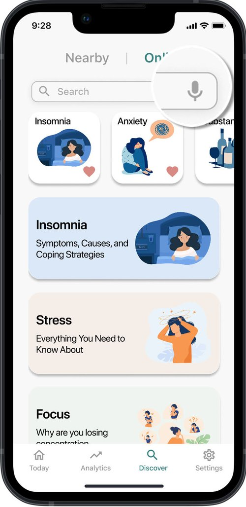
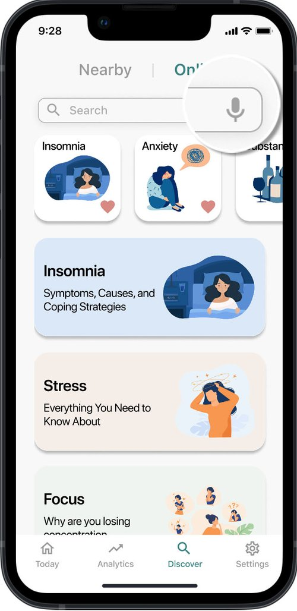

1. Background
Mental health issues have become a significant and growing concern for university students. According to American College Health Association (2019) on health assessment for Canadian universities, 51.6% of students reported that they had experienced depression within the last year, 68.9% had felt overwhelming anxiety, and 87.6% had been mentally exhausted. Although many college students are struggling with different mental health issues, the assessment has shown that the majority of them (67%) never asked for professional support.

University students can be detrimentally impacted by mental health issues on their academic performance and life satisfaction (Arslan et al., 2009). The most common mental health problems in students include depression, eating disorders, and sleep difficulty, which may prevent them from reaching short-term and long-term educational goals. Besides, university students suffering from depression are more likely to overindulge in drinking and smoking, lose concentration, and experience difficulties in emotional control. On top of that, suicide can be one of the most serious consequences of long-term depression among university students (Yusoff et al., 2013).


 
